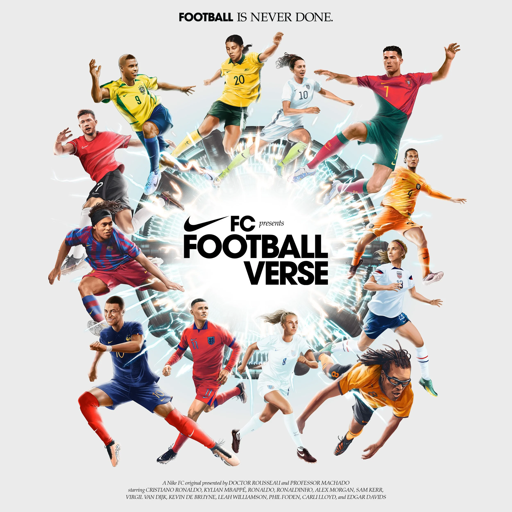
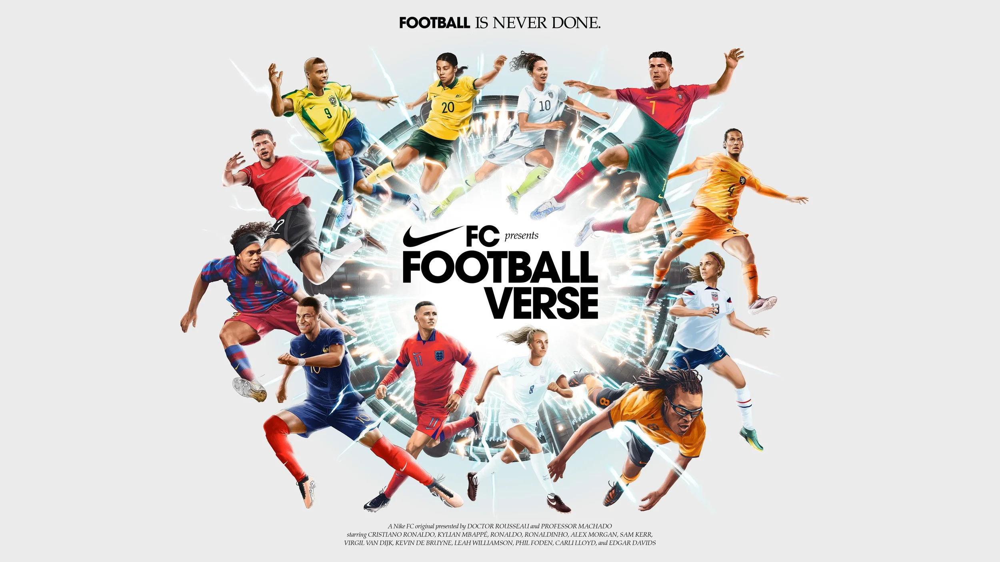
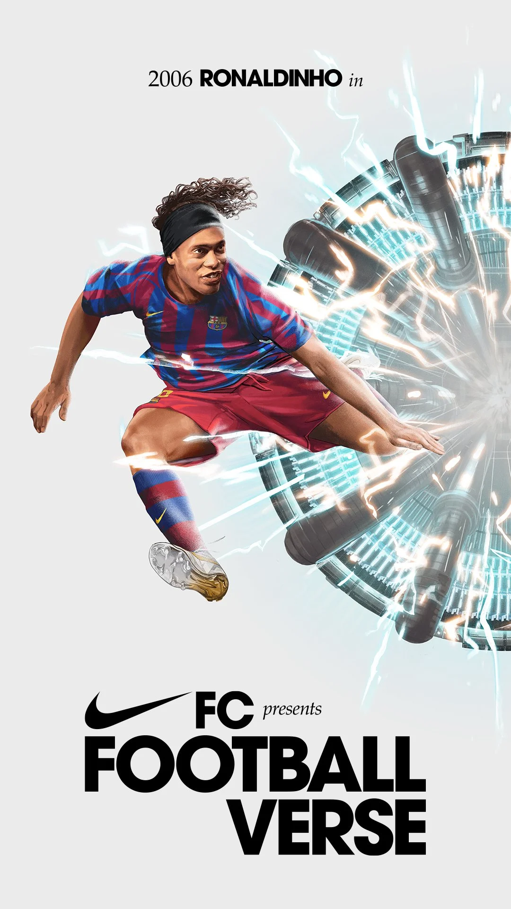

案例发生了什么



科学家争论姆巴佩和罗纳尔多谁更强，于是打开一座实验室，把小罗、C 罗、罗纳尔多、姆巴佩等不同年代的版本带到同一块球场。影片把球迷永远没有答案的跨时代争论，变成可以被看见的“足球宇宙”。
以实验室门户作为统一视觉机制，先发布群星主片，再把单个传奇的出现、技能与对位拆成短内容和人物海报，供不同市场与球迷圈层接力讨论。
MARKETING KNOWLEDGE ROUTER · 营销知识路由器
营销启发卡
把历届经典的记忆点、商业结构和迁移方法放在同一层阅读。 卡片底部按主题连接全站相关案例、经典方法与深度文章。
核心动作
代际球迷的争论欲、传奇回归的怀旧感，以及梦幻阵容成真的惊喜；实验室大门打开，不同年龄的传奇球员走到同一块场地。
传播与商业机制
Nike 长期积累的球星关系本身就是一座档案库；案例把旧资产重新剪辑为当代内容，而不是每届重新购买一套孤立代言；以实验室门户作为统一视觉机制，先发布群星主片，再把单个传奇的出现、技能与对位拆成短内容和人物海报，供不同市场与球迷圈层接力讨论。
可复用的方法
当品牌拥有跨年代人物资产时，最有价值的不是“谁来得最多”，而是找到一个能让新旧资源发生关系的命题。
适用条件、风险与证据
- 人物肖像、历史素材与跨年代版本都涉及复杂授权；没有真实比赛结果承接时，传播容易停在阵容讨论。
- 后续复盘还应补齐发布主体、时间线、真实执行图、媒介范围和结果口径；没有这些证据时，不把行业评价或赛事总热度写成品牌增量。
资料与来源
官方资料与原始来源
市场 / 权益
全球
非官方/球星资源
创意打法
跨时代假设型；科幻世界观；球星群像型；数字短切片型
- Oliver Barrett · 2022Nike World Cup Footballverse · 视觉项目页
- Nike Football · 2022The Footballverse · 官方影片
来源按品牌/官方发布、官方账号留存、权威媒体、获奖案例库分层记录；品牌与奖项自报结果不视作独立审计。